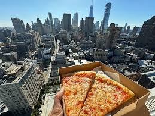
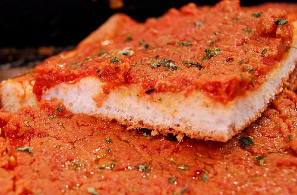
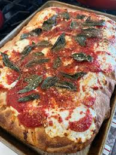
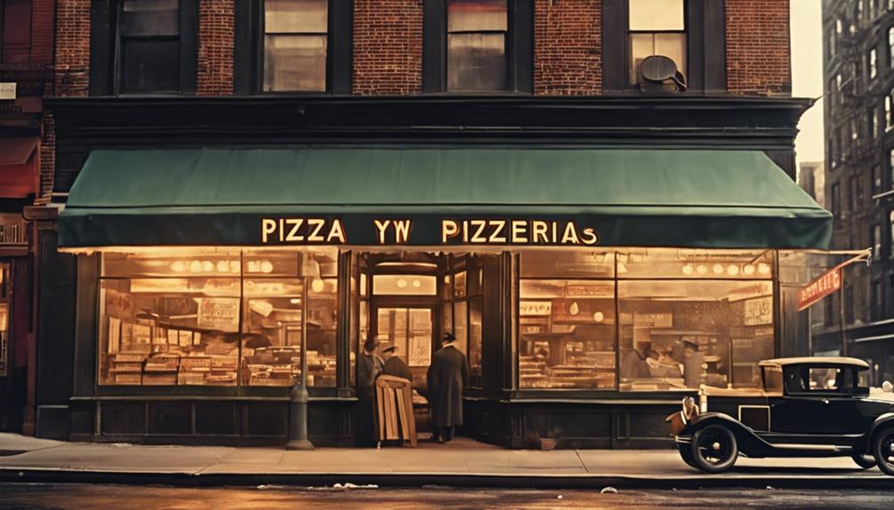

New York Pizzas

New York style pizza is a pizza made with a large hand-tossed thin crust, often sold in wide slices to go. The crust is thick and crisp only along its edge, yet soft, thin, and pliable enough beneath its toppings to be folded to eat. Traditional toppings are simply tomato sauce and shredded mozzarella cheese. This was a popular meal among poor Italian Americans due to its low cost.
Tomato Pies and Classic Pizzas

This style evolved in the U.S. from the pizza that originated in New York City in the early 1900s, itself derived from the Neapolitan-style pizza made in Italy. Today, it is the dominant style eaten in the New York metropolitan area states of New York and New Jersey and is popular throughout the United States. Regional variations exist throughout the Northeast and elsewhere in America. New York style pizza is traditionally hand-tossed, consisting in its basic form of a light layer of tomato sauce sprinkled with dry, grated, full-fat mozzarella cheese; additional toppings, if desired, are placed over the cheese. Pizzas are typically around 18 to 24 inches (45 to 60 cm) in diameter, and commonly cut into eight slices.

Ne York Pizza Shops:


Lawry's Pasty Shop Adress:
2381 US-41
Ishpeming, MI 49849
Phone number:906-485-5589